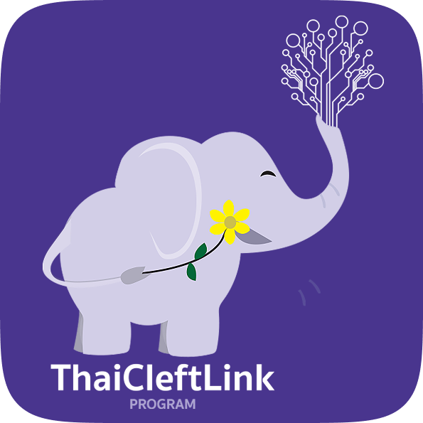

01
Mobile Application & Website
Thai Cleft Link
Thai Cleft Link Program
A cross-platform system connecting cleft lip and palate patient records across primary care networks (sub-district health centers) and families in remote Northern Thailand — enabling proactive case discovery, streamlined referrals, and efficient treatment tracking.